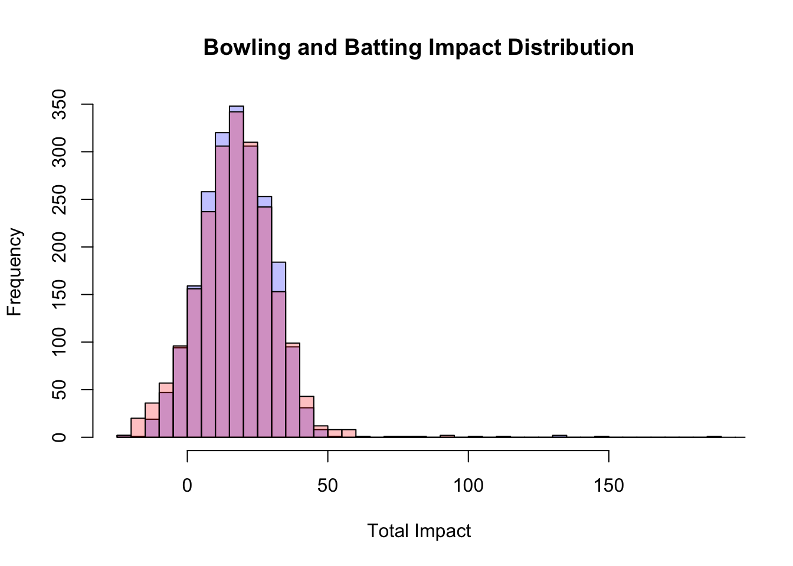
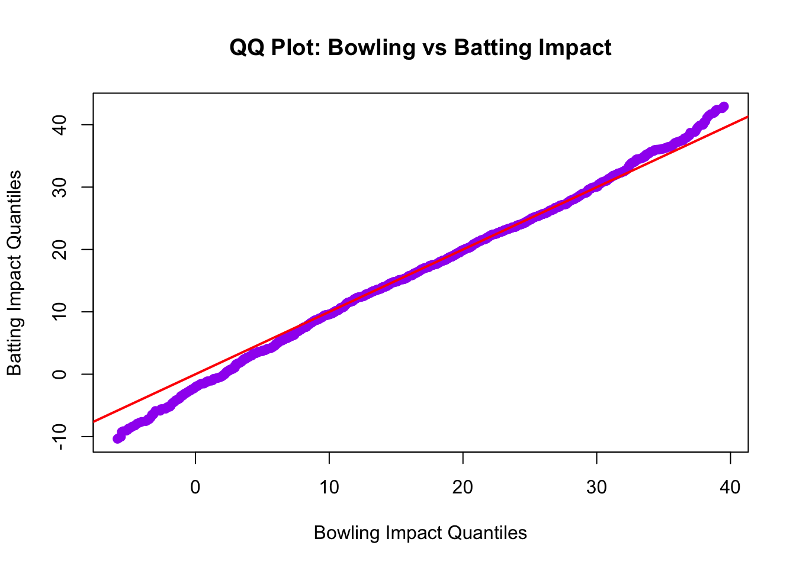

Cricket Data Analysis
1 Data Processing - Data_Processing.R
1.1 Preprocessing
Library Loading
library(cricketdata)
library(dplyr)
library(pROC)
library(caret)
library(glmnet)
library(ggplot2)
library(stats)
library(knitr)
library(lsr)
library(datasets)
batting_data <- read.csv("../data/battinginningdata.csv") # Gets from working directory to batting innings data
bowling_data <- read.csv("../data/bowlinginningdata.csv") # Gets from working directory to bowling innings data
match_data_file_cricinfo = read.csv("../data/MatchData-Cricinfo.csv") # Gets match result data from Cricinfo results fileCreate Country Acronym Mapping - 12 Test-playing nations
country_acronyms <- c(
"Australia" = "AUS",
"India" = "IND",
"South Africa" = "RSA",
"England" = "ENG",
"New Zealand" = "NZL",
"West Indies" = "WI",
"Pakistan" = "PAK",
"Sri Lanka" = "SL",
"Afghanistan" = "AFG",
"Bangladesh" = "BAN",
"Ireland" = "IRE",
"Zimbabwe" = "ZIM"
# Add more as needed
)
countries = c("Australia", "India", "South Africa", "England", "New Zealand", "West Indies", "Pakistan", "Sri Lanka", "Afghanistan", "Bangladesh", "Ireland", "Zimbabwe")Remove countries not in country list, change BAN to Bangladesh
batting_data <- batting_data %>% mutate(Country = ifelse(Country == "BAN", "Bangladesh", Country))
bowling_data <- bowling_data %>% mutate(Country = ifelse(Country == "BAN", "Bangladesh", Country))
match_data_file_cricinfo <- match_data_file_cricinfo %>% filter(Team.1 %in% countries & Team.2 %in% countries & Winner %in% countries)
batting_data <- batting_data %>% filter(Country %in% countries & Opposition %in% countries)
bowling_data <- bowling_data %>% filter(Country %in% countries & Opposition %in% countries)Replace with acronym
match_data_file_cricinfo$Team.1 <- country_acronyms[match_data_file_cricinfo$Team.1]
match_data_file_cricinfo$Team.2 <- country_acronyms[match_data_file_cricinfo$Team.2]
match_data_file_cricinfo$Winner <- country_acronyms[match_data_file_cricinfo$Winner]
batting_data$Country <- country_acronyms[batting_data$Country]
batting_data$Opposition <- country_acronyms[batting_data$Opposition]
bowling_data$Country <- country_acronyms[bowling_data$Country]
bowling_data$Opposition <- country_acronyms[bowling_data$Opposition]
match_data_file_cricinfo$Date <- as.Date.character(match_data_file_cricinfo$Match.Date, format = "%b %d, %Y")
batting_data$Date <- as.Date(batting_data$Date)
bowling_data$Date <- as.Date(bowling_data$Date)
batting_data$Team = batting_data$Country
bowling_data$Team = bowling_data$Country
batting_data$Opponent = batting_data$Opposition
bowling_data$Opponent = bowling_data$OppositionCreate a combined Team column in match_data_file_cricinfo
match_data_file_cricinfo <- match_data_file_cricinfo %>%
mutate(Team = ifelse(Team.1 < Team.2, paste(Team.1, Team.2), paste(Team.2, Team.1)))Create a combined Team column in batting_data and bowling_data
batting_data <- batting_data %>%
mutate(Team = ifelse(Country < Opposition, paste(Country, Opposition), paste(Opposition, Country)))
bowling_data <- bowling_data %>%
mutate(Team = ifelse(Country < Opposition, paste(Country, Opposition), paste(Opposition, Country)))Print some info for debugging
print("Unique Dates in match_data_file_cricinfo:")
print(unique(match_data_file_cricinfo$Date))
print("Unique Dates in batting_data:")
print(unique(batting_data$Date))
print("Unique Dates in bowling_data:")
print(unique(bowling_data$Date))
print("Unique Teams in match_data_file_cricinfo:")
print(unique(match_data_file_cricinfo$Team))
print("Unique Teams in batting_data:")
print(unique(batting_data$Team))
print("Unique Teams in bowling_data:")
print(unique(bowling_data$Team))Join data by match
batting_data <- left_join(batting_data, dplyr::select(match_data_file_cricinfo, ID, Date, Team), by = c("Date", "Team"))
bowling_data <- left_join(bowling_data, dplyr::select(match_data_file_cricinfo, ID, Date, Team), by = c("Date", "Team"))Compute Batting Impact
batting_data <- batting_data %>%
mutate(OutPenalty = ifelse(NotOut == FALSE, 0.5, 0),
BattingImpact = Runs * 0.125 + ((StrikeRate - 130) * 0.025) + (Fours * 0.3) + (Sixes * 0.5) - OutPenalty)Compute Bowling Impact
1.2 Distribution Comparison - Verify Batting and Bowling Impact are Similar
Aggregate Batting and Bowling Impact by Player and Country, Plot Distribution
batting_impact <- batting_data %>%
group_by(ID, Country) %>%
summarise(TotalBattingImpact = sum(BattingImpact, na.rm = TRUE)) %>%
ungroup()
bowling_impact <- bowling_data %>%
group_by(ID, Country) %>%
summarise(TotalBowlingImpact = sum(BowlingImpact, na.rm = TRUE)) %>%
ungroup()
hist(bowling_impact$TotalBowlingImpact, breaks = 50, main = "Bowling and Batting Impact Distribution", xlab = "Total Impact", col = rgb(0,0,1,1/4))
hist(batting_impact$TotalBattingImpact, breaks = 50, main = "Batting Impact Distribution", xlab = "Total Batting Impact", col = rgb(1,0,0,1/4), add = TRUE)
Kolmogorov-Smirnov Test with p > 0.05 verifies that we cannot reject the null hypothesis that the two distributions are the same, with almost 0 evidence (p = 0.37)
##
## Asymptotic two-sample Kolmogorov-Smirnov test
##
## data: bowling_impact$TotalBowlingImpact and batting_impact$TotalBattingImpact
## D = 0.028116, p-value = 0.3678
## alternative hypothesis: two-sidedQQ Plot to visually compare the distributions
qqplot(
quantile(bowling_impact$TotalBowlingImpact, probs = seq(0.025, 0.975, length.out = 1000)),
quantile(batting_impact$TotalBattingImpact, probs = seq(0.025, 0.975, length.out = 1000)),
xlab = "Bowling Impact Quantiles",
ylab = "Batting Impact Quantiles",
main = "QQ Plot: Bowling vs Batting Impact",
pch = 19, col = "purple"
)
abline(0, 1, col = "red", lwd = 2) # line of equality
Calculate Cohen’s d to measure that the effect size is minimal (d < 0.1)
## [1] 0.02783777Make bowling impact have batting data mean and sd
bowling_impact$TotalBowlingImpact = (bowling_impact$TotalBowlingImpact)
batting_impact$TotalBattingImpact = (batting_impact$TotalBattingImpact)Merge Batting & Bowling Impact
1.3 Merge with Match Data and Measure Correlation with Match Outcome
Don’t run commented line below on first run, but can be done afterward to reset columns
#match_data_file_cricinfo[, 10:16] <- list(NULL)
match_data_file_cricinfo <- match_data_file_cricinfo %>%
left_join(team_impact, by = c("ID" = "ID", "Team.1" = "Country")) %>%
rename(Impact_Team1 = TotalImpact) %>%
left_join(team_impact, by = c("ID" = "ID", "Team.2" = "Country")) %>%
rename(Impact_Team2 = TotalImpact)Compute Impact Difference & Outcome Variable
match_data_file_cricinfo <- match_data_file_cricinfo %>%
mutate(Impact_Diff = Impact_Team1 - Impact_Team2,
Winner_Team1 = ifelse(Winner == Team.1, 1, 0))Print the final correlation and R-squared value
print(paste("Final correlation: ", cor(match_data_file_cricinfo$Impact_Diff, match_data_file_cricinfo$Winner_Team1, use = "complete.obs")))## [1] "Final correlation: 0.774106530488118"rsquared = cor(match_data_file_cricinfo$Impact_Diff, match_data_file_cricinfo$Winner_Team1, use = "complete.obs")^2
cor.test(match_data_file_cricinfo$Impact_Diff, match_data_file_cricinfo$Winner_Team1, use = "complete.obs")##
## Pearson's product-moment correlation
##
## data: match_data_file_cricinfo$Impact_Diff and match_data_file_cricinfo$Winner_Team1
## t = 39.793, df = 1059, p-value < 2.2e-16
## alternative hypothesis: true correlation is not equal to 0
## 95 percent confidence interval:
## 0.7488087 0.7971521
## sample estimates:
## cor
## 0.7741065## [1] "Final R-squared: 0.599240920544352"